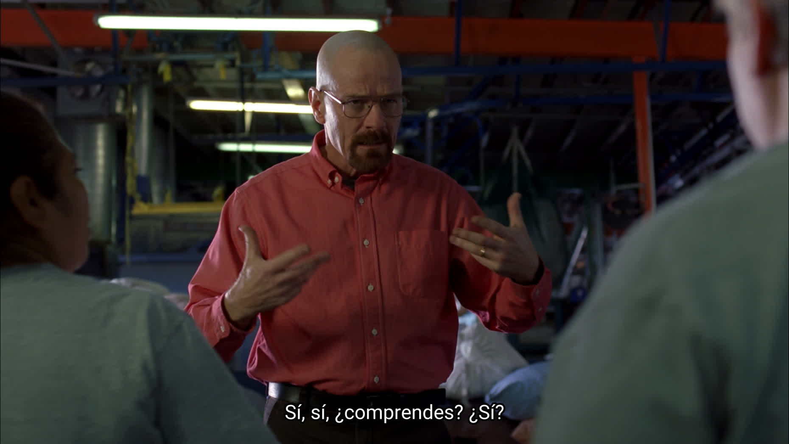

About 3 weeks ago I decided It would be a good idea to pick up learning a new language in summer since I have a excess amount of time to spare.I wanted to learn a new language and decided to go with Spanish since Spanish is quite similar to English (vocabulary-wise), and also I’ve always wanted to learn Latin so I figured It’s a good step towards getting more familiar with romance languages.
Michel Thomas is a decorated WWII veteran who developed his own language-teaching method, He kept this method a secret and only used it in his own institute for the better part of his life, he believed that “there are no bad students only bad teachers”. In early 2000s he decided to publish Educational Audio tracks on different languages using his method.
His teaching method is strictly verbal and demands students not to write anything down or take notes ( even mental notes!) he says that it’s very important for students not to try and “remember” taught material when they’re not in class, Another requirement is that the student must be “relaxed” and away from the sensation of “being stressed to learn something”
When I was looking around for material to learn Spanish, I had in mind the fact that most language “learning” materials really don’t teach you languages the way they’re supposed to be taught since native speakers learn languages mostly by listening and communicating and there’s really no hierarchical process when learning a language, that is precisely how I learned English and My English skills seem to be way better than that of my most peers.
Having that in mind I decided to give Michel Thomas tapes a chance, Although to be completely honest At first it came across as a scam since the pdf file included along with the tapes kept on promising unreal results and also boasted a lot about some mysterious learning method that has been in the dark for the longest time and has educated lots and lots of Wealthy Actors and Senators, but since the entire Spanish course was about 8 hours I decided to give it a try.

And I was so wrong about my conception of what The Michel Thomas Experience™ was going to be like. The tapes are basically Michel Thomas, and two students in a room together. Michel teaches something basic and asks the students to use it in a sentence for example he would say: “ Tengo means I have, Lo means it, Lo tengo means I have it and Los means them, So what would I have them be?” and the students will try and come up with the proper Spanish Sentence. And That’s basically how the entire course is. He gives the students a good grasp on how the language really works and wants them to come up with the sentences themselves, he never really gives the student the complete sentence, they have to come up with it themselves.
One enjoyable thing about Michel is that he knows exactly the extend of what he has taught his students, he might mention something once and proceed and then he will ask about it 4 hours Later(in the course).
I’ve been listening to about 5 or 6 tapes everyday for the past 3 weeks and I feel Like I have a good understanding of how sentences are constructed in Spanish and I can put sentences together as If I “Know” how to speak Spanish, and that’s exactly how you want to feel, I see a lot of people who claim they are “learning” a language but very clearly seem to be translating when they attempt to put words together which is a major SIN!
Anyways I recommend you look at the Michel Thomas Tapes if you ever want to learn a new language although I’ve heard the courses in which Michel Thomas is not present differ majorly from his way of teaching even though I haven’t listened to them myself I don’t recommend you getting them since it’s not really the Michel Thomas Method.